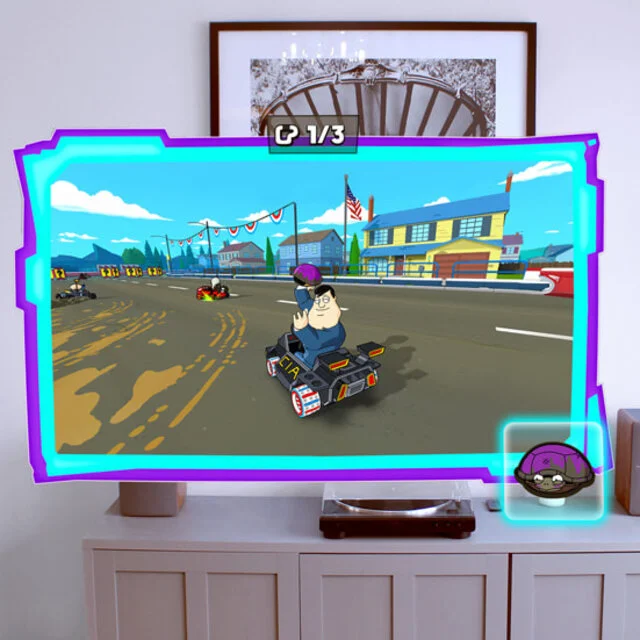
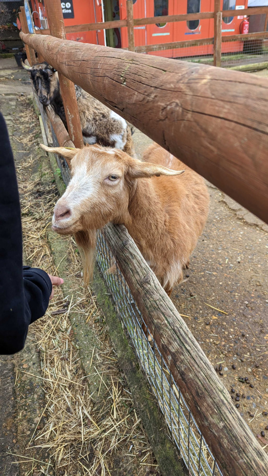

UX Designer & Researcher
Erica Saffron
Crafting
intuitive
experiences.
With extensive gaming industry experience and a Master's degree in Human-Computer Interaction Design, I bring creativity and technical expertise to every project.
I'm a UX Designer and Researcher based in Brighton, with a background in the gaming industry and a Master's in Human-Computer Interaction Design. I specialise in designing experiences that are genuinely useful: grounded in research and built with care.
More about me →
UI/UX design for FIFA Heroes, the officially licensed FIFA 5v5 mobile football game.

UI/UX design for the first kart racing game on Apple Vision Pro.

UI/UX design for the iOS kart racing game from Electric Square.

UI/UX and vector graphics for EA's flagship racing franchise.

Designing an interactive vending machine to promote acts of kindness at King's Cross Station.

Full IA project — domain model, card sorting, sitemap, and wireframes for a skincare platform.

Community co-design at Spitalfields City Farm using Lego Serious Play to surface insights.